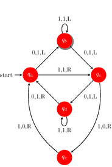
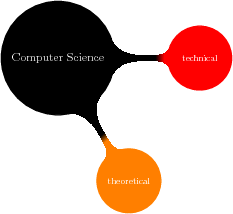
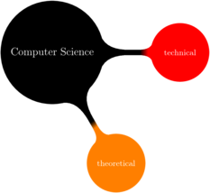

Back to the extension listing.
Webgen::Tag::TikZ
Summary
The following tag names are registered for this tag class: tikz
This tag uses the following options:
tag.tikz.path(mandatory default)tag.tikz.librariestag.tikz.optstag.tikz.resolutiontag.tikz.transparenttag.tikz.img_attr
Description
This tag provides support for automatically generating graphics with the fantastic PGF/TikZ library
for LaTeX. You will need to have a current LaTeX distribution with the PGF/TikZ library installed
and ImageMagick for this to work. You will also need Ghostscript if you want support for transparent
PNG images. More exactly, you will need to have the programs pdflatex (usually included in the
LaTeX distribution - for generating a PDF from the LaTeX document that describes the PGF/TikZ
graphic), pdfcrop (usually included in the LaTeX distribution - to crop the generated PDF and
throw away useless borders), convert (provided by ImageMagick - to convert the generated PDF
document to an image file format and to optionally resize them) and gs (provided by the
Ghostscript package - to generate transparent PNG images).
When using this tag, you need to set at least the default mandatory parameter tag.tikz.path. This
path specifies the source path that should be used for generating the image and should not
exist. The output path is dervied from this path the usual way. The extension used for this
parameter specifies the final image format that is used (a good choice is PNG). All other parameters
are optional. The commands for creating the PGF/TikZ picture are specified in the body of the
tag. Have a look at some of the examples below to set the power of PGF/TikZ.
If you want to generate transparent images, you will need to set tag.tikz.transparent to true
and specify a tag.tikz.path with a .png extension.
Examples
These examples are taken (sometimes a little bit altered) from the great PGF Manual included in the PGF/TikZ distribution.
| Usage | Output |
|---|---|
{tikz:: house.png}
\tikz \draw[thick,rounded corners=8pt]
(0,0) -- (0,2) -- (1,3.25) -- (2,2) -- (2,0) -- (0,2) -- (2,2) -- (0,0) -- (2,0);
{tikz}
|
|
{tikz:: {path: chain.png, libraries: [arrows,automata,shadows,positioning],
opts: "->,>=stealth,shorten >=1pt,auto,node distance=2.8cm,on grid,semithick,
every state/.style={fill=red,draw=none,circular drop shadow,text=white}",
resolution: 300 72}}
\node[initial,state] (A) {$q_a$};
\node[state] (B) [above right=of A] {$q_b$};
\node[state] (D) [below right=of A] {$q_d$};
\node[state] (C) [below right=of B] {$q_c$};
\node[state] (E) [below=of D] {$q_e$};
\path (A) edge node {0,1,L} (B)
edge node {1,1,R} (C)
(B) edge [loop above] node {1,1,L} (B)
edge node {0,1,L} (C)
(C) edge node {0,1,L} (D)
edge [bend left] node {1,0,R} (E)
(D) edge [loop below] node {1,1,R} (D)
edge node {0,1,R} (A)
(E) edge [bend left] node {1,0,R} (A);
{tikz}
|
 |
Not transparent and standard res
{tikz:: {path: mindmap.png, libraries: [mindmap]}}
\path[mindmap,concept color=black,text=white]
node[concept] {Computer Science}
[clockwise from=0]
child[concept color=red] { node[concept] {technical} }
child[concept color=orange] { node[concept] {theoretical} };
{tikz}
|
 |
Transparent and high res
{tikz:: {path: mindmap-low.png, libraries: [mindmap],
img_attr: {style: 'background:transparent'},
transparent: true, resolution: 300 72}}
\path[mindmap,concept color=black,text=white]
node[concept] {Computer Science}
[clockwise from=0]
child[concept color=red] { node[concept] {technical} }
child[concept color=orange] { node[concept] {theoretical} };
{tikz}
|
 |
Back to the extension listing.